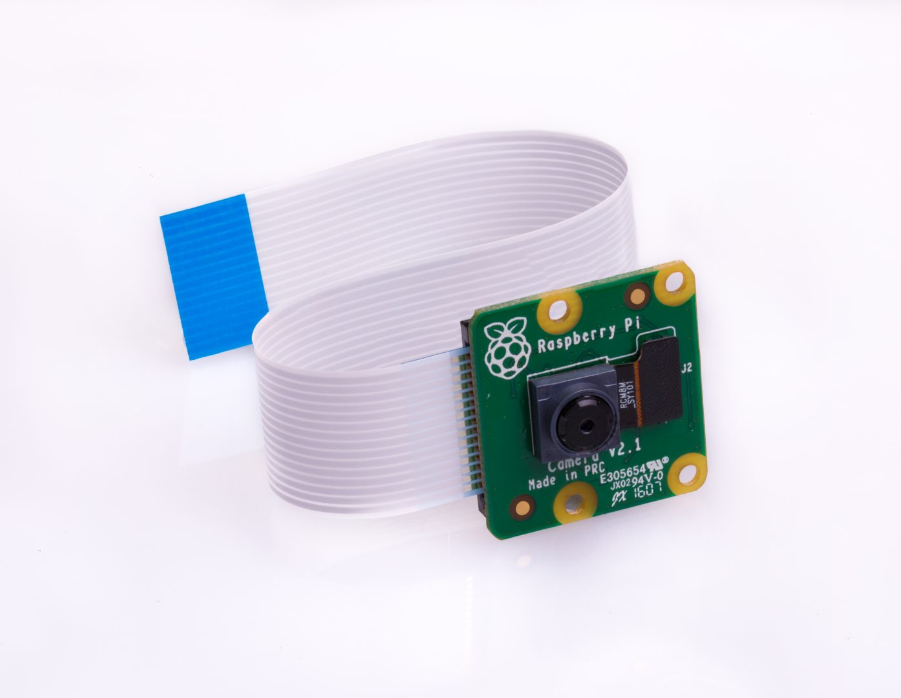
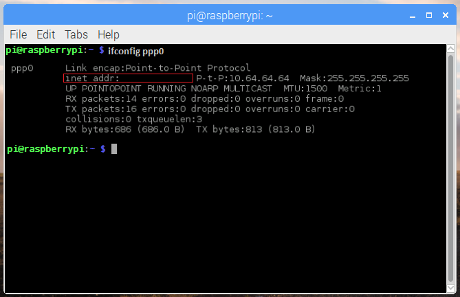

Table of Contents
Raspberry Pi Starterkit for IoT-Activation
Your Raspberry kit is composed by:
Raspberry Pi 3 B+
The Raspberry Pi is a small computer developed by the Raspberry Pi Foundation to promote teaching of basic computer science.
It is a Single Board Computer (SBC). All the necessary components are integrated in the same board.

-
BCM2837 This is the Broadcom chip used in the Raspberry Pi 3 with a quad-core ARM Cortex A53 (ARMv8) cluster
-
USB ports these allows you to connect USB peripherals like mouse, keyboard, USB drive, modem 3G …
-
SD card slot You will install the Operating System in a microSD card that will be allocated here. This card also keeps all your files save.
-
Ethernet, Wifi and BL Three different interfaces, to enables different connection ways.
-
Audio jack You can connect headphones or speakers
-
HDMI port You can use the output for connect the Raspberry to a monitor.
-
Micro USB power connector This is where you connect the power supply
-
GPIO ports These allow you to connect electronic components such as LEDs, buttons to the Raspberry.

Case for Raspberry
Removable side panels and lid for easy access to GPIO, camera and display connectors. With light pipes for power and activity LEDs

MicroSD with pre-installer NOOBS (Raspberry-Pi OS)
Official 16GB MicroSD Card and Full-Size Adapter
NOOBS Operating System
Is an easy operating system installer which contains Raspbian
What is Raspbian?
Raspbian is a free operating system based on Debian optimized for the Raspberry Pi hardware. An operating system is the set of basic programs and utilities that make your Raspberry Pi run. However, Raspbian provides pre-compiled software bundled in a nice format for easy installation.

Raspberry Pi universal Power Supply 2.5A 5.1V
Interchangeable heads for different countries and 1.5m lead
Protection for: short circuit, over current and over voltage.

Raspberry Pi Camera V2
It allows you to record high-definition video and take pics. The v2 Camera Module is provide with a Sony IMX219 8-megapixel sensor.

Raspberry Pi Sense HAT
It is a board that includes different devices and sensors
- 8x8 RGB LED matrix
- joystick (5 buttons: up, down, left, right and press)
- Gyroscope
- Accelerometer
- Magnetometer
- Temperature
- Barometric pressure
- Humidity

💊 Did you know that it was made especially for being launched to the International Space Station in December 2015?
Huawei MS2131 USB Stick
The Huawei USB Modem MS2131i-8 is a robust USB stick designed for industrial. Withstands high temperatures and humidity conditions.
The MS2131 is a quad-band HSPA+ modem with a transmission speed of up to 21 Mbps (D/L) and 5.76 Mbps (U/L).
Also has the possibility to be connected to an external antenna via his CRC9 connector.

Telefónica SIM Card
This little one makes you enjoy all the advantages of the Telefonica network. Take care of her, she will be your partner into the IoT world.


Getting started with your Raspberry
Install OS (Raspbian)
You will start the OS installation, prepare the following material:
- A Raspberry Pi
- MicroSD with pre-installer NOOBS
- Monitor with HDMI connector
- USB keyboard and mouse
- USB Power Supply
To begin, carefully follow the instructions below.
- Connect the Raspberry to HDMI monitor.
- Insert the microSD card into the slot on the Raspberry.
- Plug a keyboard and mouse in the Raspberry’s USB slot.
- Connect the USB Power Supply using the correct head from your country. (For this step is necessary do previously the 2 first steps)
- Select the Raspbian option in the window.
- Select your language, and the corresponding keyboard type
- If you wish, you can now configure the wifi connection or wait for the next section.
- Press the install button.
- Accepts the confirmation window and waits until the installation is complete.

Congrats! You have just started at the IoT world. We will continue setting up your network interfaces.
Connect to your Wi-Fi network and Update the Software
First of all, you should update all the packages and software running on your board. This process can consume a huge amount of data. So, we highly recommend you, to start setting up wifi interfaces.
Set Ctrl+Alt+T to open a Terminal.

Sometimes some errors may occur because the system dates are not update. To avoid these errors, you can update the Raspberry time with the following command.
sudo date -s "05/23/2018 12:00:00"
For connect with your Wi-Fi network, press on the top right corner in the LAN icon and select your network name with your password if is necessary.
If wifi is disabled, you have to access to the Raspberry configuration.
In this case open a terminal and type
sudo raspi-config
This command will open a window like the one in the following image.
- Select Network Options
- Select Wi-fi
- Select your country
- Now the wifi is activate
- Enter your SSID (Name of your wifi network)
- Enter your password if is necessary
- Chose FINISH with the tab key

📍 Sometimes some corporate networks require additional validation. In this case it will be necessary to proceed correctly or contact the network administrator.
👍 If you don’t want to run out of data please set up the wifi connection, before running all these commands!
Open a Terminal windows and update the repository with the command
sudo apt-get update
Wait it finish
Then it is necessary install some packages. We recommend you write the lines on the console one by one and wait for it to be installed to continue with the next.
sudo apt-get install network-manager
sudo apt-get install gedit
sudo apt-get install python
sudo apt-get install sense-hat
sudo apt-get install nmap
sudo apt-get install crontab
sudo apt-get install realvnc-vnc-server realvnc-vnc-viewer
Telefonica’s connection.
Connect the USB modem MS2131 to the Raspberry’s usb.
Once connected, you can check that your raspberry recognizes the device using the command lsusb.
This command lists all devices connected to the USB ports of your device. When connecting and disconnecting the modem, the device appears and disappears, check it on the list.
Create the USB Stick connection in a command line
sudo nmcli con add type gsm ifname "*" con-name USBStick apn TelefonicaSIM_APN user telefonica password telefonica
📍 The field TelefonicaSIM_APN must be replaced by the APN address of your Telefónica SIM card. In this case, the APN of your SIM card will be provided by Telefónica. However, you will be able to identify it through access to Kite.
If your SIM uses a PIN code, add to the end of the command: pin 0000
Now the connection USB-Stick has been created. Look at it with the command
ifconfig ppp0

the inet address label shows your Raspberry’s IP
How Test your new connection
👍 To make sure that the transmission is done through the USB modem, in this step we recommend disabling the wifi connection. To deactivate the wifi connection click on the network symbol in the upper right corner and press Turn off Wi-fi.
An easiest way of test your connectivity is make ping a website. Use the next command
ping www.telefonica.com
Another way to test it, It is downloading a file from a server and read it.
wget https://jsonplaceholder.typicode.com/todos/1
to check the downloaded file, you can use the command:
cat 1
Now you should be able to read something close to this json example
{
"userId": 1,
"id": 1,
"title": "delectus aut autem",
"completed": false
}
👍 To tidy up, we recommend you delete the test file with the following command.
rm 1

If you have followed all these steps, there should be no problem. but if not, your SIM card may not be activated.
Luckily you have access to the Kite Platform and you can manage its status check out our tutorial
Use a remote access. Enable SSH server on Raspbian.
You can access to the command line and manage the Raspberry using your pc, but is necessary a SSH connection
Open a terminal window and enter
sudo systemctl enable ssh
sudo systemctl start ssh
Alternatively, you can enable the SSH connection using the configuration interface. opens the menu with the following command.
sudo raspi-config
- Select Interfacing Options
- Select SSH
- Select YES
- Select Ok
- Chose FINISH with the tab
If you reboot the device without changing the default user and password, with SSH connection enabled, a warning pop up message will appear showing risks involved.
Change user Password
When you installed the OS, a default user was been created.
default user 'pi'
default password 'raspberry'
for security reasons is recommended set a new password
Type in the terminal window
passwd
- Write the current-password raspberry
- Enter the new-password
- Re-enter the new-password
- Your Password has been changed!
Now for connect with your Raspberry you need installer a SSH client on your computer.
Set up your SSH client in Linux
from a terminal window:
ssh –p 22 pi@00.00.00.00 -> Raspberry IP
Set up your SSH client in Windows
There is a wide variety of SSH clients that you can use. Many of them are free!!
But if you know which one to choose, we are using Putty. Download it from www.putty.org and install it
Open putty and write the Raspberry’s IP in the Host Name box Select SSH like Connection type and Port 22 use the Raspberry default user pi and the new-password selected on the previous chapter

Control your raspberry with a network cable
If you want to connect your Raspberry to your computer via a network cable (Ethernet), you must ensure that both devices (Raspberry and your PC) are configured for the same network.
The easiest way is to set up a static IP. In order to do this, we will assign an IP of our choice to the configuration that you assign for the configuration.
Open a terminal window use the next command ‘sudo ifconfig -a’
If you are connected by cable you will see an IP address assigned. This IP has been assigned automatically and will change whenever you establish a new connection.
First configure the the IP at manual mode. Edit the file /etc/network/interfaces and add the next line:
iface eth0 inet manual
To set a default IP address edit the file /etc/dhcpcd.conf
use the command sudo nano /etc/dhcpcd.conf at the command prompt.
Scroll to the bottom of the script, and add the following lines
interface eth0
static ip_address=192.168.0.10/24
Save the file with Ctrl+O and close it with Ctrl+X
review the changes whit the command cat /etc/dhcpcd.conf
📍 It is common for configuration files to contain commented examples. If you have any problem with the configuration, search and comment the example you need. It can save you a headache.